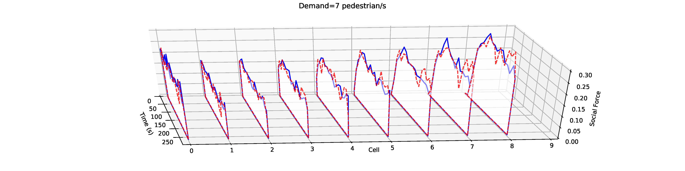
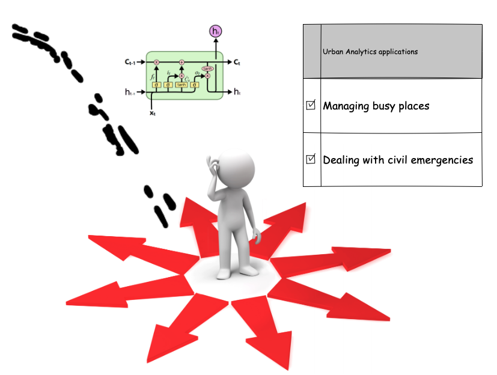

Data-driven cities: bringing together data analytics and city simulation
Minh Kieu
Presentation for the Lecturer position in Urban Data Science
Agenda
Career overview
Why Leeds?
Research trajectories & vision
How does my research contribute to SoG, CSAP and LIDA
Teaching experience, philosophy and contributions
How do I plan to contribute to the new MSc programme
Part A: Career overview
Career trajectory
Research interests
Funding track record
Research funding
1. Co-I: Urban Transport Modelling for Sustainable Well-being in Hanoi
2. PI: Synthetic data of human activities (SynAc)
3. Co-I: Enhancing Productivity of Construction Projects by Developing Tailored Digital Twins for Robust Planning and Control
4. Collaborator: A Study on People’s Geoprivacy Concerns for and Acceptance of COVID-19 Control Measures that Use Individual Georeferenced Data
Total successful funding: £540,000
Part B: Research trajectories & vision
Research trajectory
- Current projects
- Research proposal
1. Data Assimilation for Agent-Based Models (DUST)

Develop data-driven Agent-based Models that can be updated with real-time data
Bus simulation model
LM Kieu, N Malleson, A Heppenstall (2020) Dealing with uncertainty in agent-based models for short-term predictions. Royal Society Open Science 7 (1), 191074
Emulators of ABMs
LM Kieu, N Malleson, H Nguyen, JA Ward (TBA) Towards a real-time prediction using Emulators of Agent-Based Models. Under review at Computers, Environment and Urban Systems.
My next contribution: Deep learning-based pedestrian simulation
2. Urban Transport Modelling for Sustainable Well-being in Hanoi: Funded by the Bristish Academy
Parners
Vietnam National University
University of Leeds
University of Auckland
1. Synthetic Data Vault (SDV)
MIT
Focus on tabular data
2. Quantifying Utility and Preserving Privacy (QUiPP)
Leeds & Alan Turing Institute
Focus on population (e.g. Census) data
3. Synthetic data generators (SDG)
Edinburgh & Alan Turing Institute
Focus on Finance and Economics data
Synthetic data of human activities (SynAc)
Funded by FRDF, University of Auckland

How do my research fit to the role?
Research in Leeds

Where do I fit in?

Part C: My teaching philosophy, experience and contributions
My teaching philosophy
Student-centered teacher
Student evaluation for Civil361: Transportation Engineering 2 (268 students)
Advocate of new technology in teaching
Students' feedback on Civil361
-His slides were very visually appealing, informative and he goes through examples very thoroughly.
-Very friendly and approachable and knowledgeable. Went through practice problems in class.
-Explained examples as it helped to give real world application to our otherwise purely theoretical learning.
-Had a bit of technical problem when I downloaded the slides.
-The slides were nice to look at but sometimes I would prefer just plain and concise notes which are easier to annotate.
-When doing the tutorial/example questions, it would great to have them done on paper on the document camera.
My plan for Analysing Cities
Prerequisite: COMP5712M Programming for Data Science
Collaborating with: Roger Beecham, Robin Lovelace
Objectives: equip students with data analytic skills to handle real-world data of cities
Learning outcomes:
1. Acquire insight on what tools, algorithms, and platforms to use on each type of real-world analytic problem.
2. Assemble theories and tools from large-scale data mining, machine learning and statistical analysis to to solve problems in cities.
3. Critically evaluate the suitability and limitations of data analytics techniques for real-world urban problems.
4. Leverage the techniques in data visualisation and communication to visually represent their findings to technical and non-technical audiences.
My plan for Urban Data Science Project
Problems with Data Science courses: Lack of real-world data !
My solution: Synthetic data

Each student has an unique set of data that are relevant to them
So why I am the best fit for the role?
1.Intense knowledge of the SoG, LIDA, ITS and ATI
2.Track record and vision to be one of the research leaders in Urban Analytics
3.Ambition to develop a world-leading MSc programme in Urban Analytics